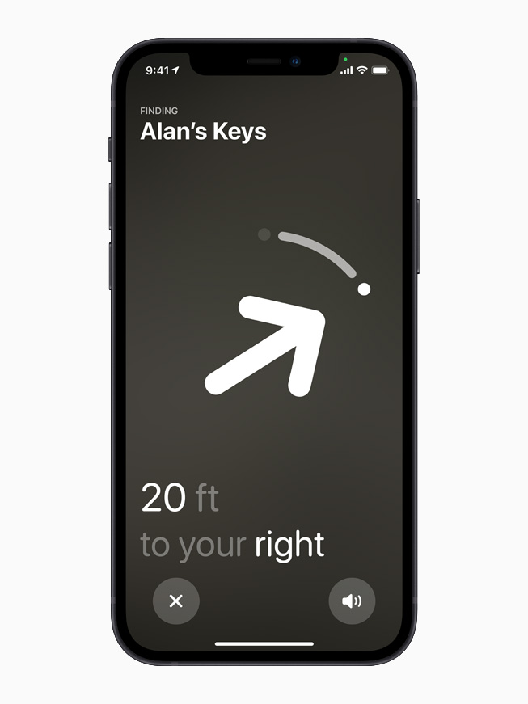
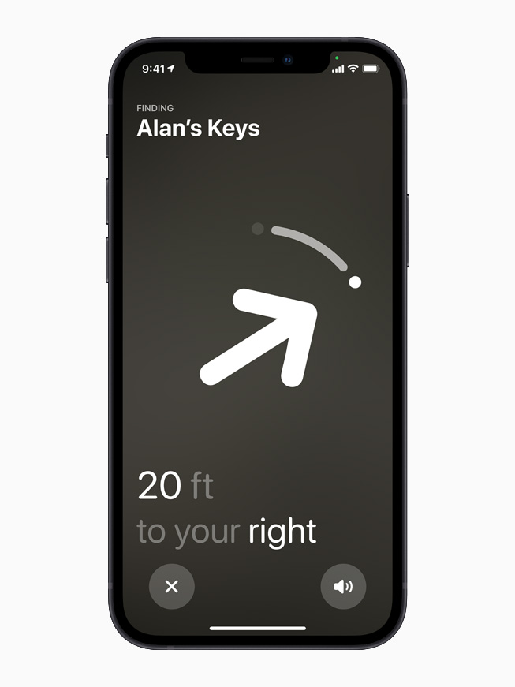

Qué es?
El airtag es un dispositivo de apple lanzado en abirl del 2021,su principal caracteristica es que es un localizador que funciona mediante bluetooth. Su principal uso es el uso cotidiano, colocar un airtag en el llavero de las llaves de casa o en el llavero de las llaves del coche para no perderlas, en la cartera o en cualquier sitio con la finalidad de tenerlo localizado.
Cómo funciona?
De Oído
Si el usuario ha perdido el objeto en el cual se ha colocado el airtag, este mismo no tiene porque buscarse mediante el localizador integrado, también puede ser localizado mediante el oido ya que cada Airtag lleva un altavoz incorporado. Mediante la aplicación de buscar del Iphone o mediante el uso del asistente siri, el Airtag puede ser localizado de manera sencilla.
Busqueda de Precisión
Gracias a la tecnología de banda ancha,cuando el airtag del usuario este lo suficientemente cerca, este podrá ser localizado de manera muy precisa. Gracias a la busqueda de precisión se sabrá la posición y la distancia exacta.
En caso de perdida lejana.
Si el dispositivo se ha perdido en un lugar remoto , esto no supondria un problema debido a que se ha habilitado una "Legión de ayudantes" a la red Buscar,es decir, la información saltaria desde todos los dispositivos apple, como los iphone, Ipad y Mac repartidos por el mundo.
El primer problema que llega a la cabeza de los usuarios al escuhar esta propuesta es si sus datos están seguros, ya que, de cierta manera saltan entre dispositivos hasta encontrar su AirTag, pero , los datos que se envían están cifrados y son anonimos de manera que es imposible acceder a ellos, para tranquilidad del usuario. Apple ha anunciado, que ni ellos disponen de los datos del airtag ni de su localizacion , ni si quiera, de los dispositvos que se han utlizado para encontralo.
Como funciona?
El AirTag manda una señal por Bluetooth, que va siendo detectada por los dispositivos cercanos, la señal va saltando hasta encontrarlo, en ese momento, la ubicación se envía a iCLoud y el usuario puede ver la posición exacta en un mapa mediante la app Buscar.
Ejemplos de uso
- Llaves de casa:
Apple proporciona llaveros q disponen de un
hueco hecho a medida
para que se coloque el AirTag en el interior.
- Mochila :
El mismo llavero del que se habló en el apartado anterior
se puede colgar de una mochila o introducir en el interior.
- Maleta de viaje:
Esta opción es una elección muy original, ya que, muchas maletas
se pierden cuando se facturan y, en ciertos casos, las compañias
tardan mucho tiempo en encontralas, si se ha colocado previamente un AirTag en su
interior, el dueño del equipaje sera capaz de encontrala antes que la propia
compañia.
- Mando de televisión:
En el caso de que en el domicilio haya personas mayores o simplemente personas
despistadas que suelen perder el mando a menudo, esta es una muy buena opción.
Apple proporciona llaveros q disponen de un hueco hecho a medida para que se coloque el AirTag en el interior.
El mismo llavero del que se habló en el apartado anterior se puede colgar de una mochila o introducir en el interior.
Esta opción es una elección muy original, ya que, muchas maletas se pierden cuando se facturan y, en ciertos casos, las compañias tardan mucho tiempo en encontralas, si se ha colocado previamente un AirTag en su interior, el dueño del equipaje sera capaz de encontrala antes que la propia compañia.
En el caso de que en el domicilio haya personas mayores o simplemente personas despistadas que suelen perder el mando a menudo, esta es una muy buena opción.
Enlaces de interes
-
Timo o genialidad?
Video del canal de youtube Tope de gama, creador de contenido de calidad que explica las ventajas y desventajas de este dispositivo, comprobando si apple , ha creado un dispositivo potente y con futuro o si es un timo.
-
10 Consejos y trucos antes de adquirir el AirTag.
Video de youtube en el que se comentan trucos y consejos para la correcta utlización de este dispositivo y para poder sacarle el mayor partido al mismo.